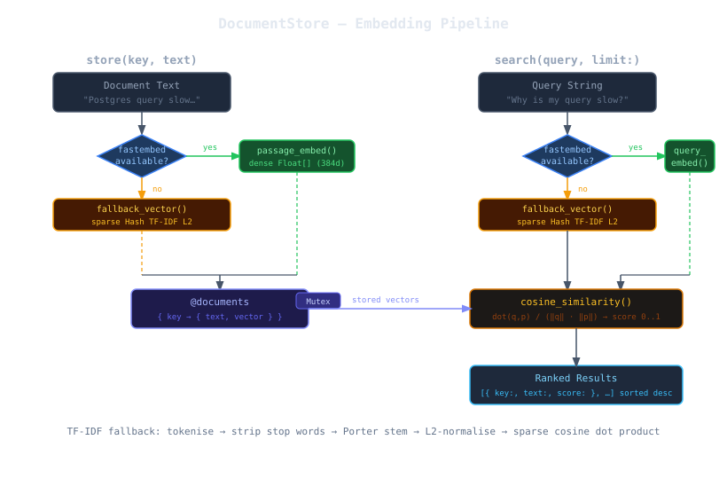

How It Works¶
Architecture Overview¶

Two operations drive the store: store (embed and save) and search (embed and rank). Both paths share the same embedding backend — fastembed when available, TF-IDF otherwise.
Embedding Backend Selection¶
On load, DocumentStore attempts to require 'fastembed'. The result is captured in FASTEMBED_AVAILABLE and drives every subsequent embed call. There is no runtime switching — the backend is fixed for the lifetime of the object.
require 'fastembed'
→ success : FASTEMBED_AVAILABLE = true → dense vector path
→ LoadError: FASTEMBED_AVAILABLE = false → TF-IDF fallback path
Fastembed Path — Dense Vectors¶
When fastembed is available, the store uses BAAI/bge-small-en-v1.5 by default — a 33M parameter English bi-encoder that produces 384-dimensional float vectors.
Asymmetric Embedding¶
The model uses separate encoders for passages (stored documents) and queries (search terms). This is deliberate: a passage encoder is optimised to capture what a document contains, while a query encoder is optimised to capture what a user wants. Using the same encoder for both degrades recall on semantically paraphrased queries.
| Call | Encoder used | Purpose |
|---|---|---|
store(key, text) |
passage_embed |
Captures document content |
search(query) |
query_embed |
Captures search intent |
Cosine Similarity¶
Given a query vector q and a stored passage vector p, similarity is:
This is the cosine of the angle between the vectors. A value of 1.0 means identical
direction (maximum similarity); 0.0 means orthogonal (no relationship). The
BGE model normalises its output to unit length, so the division reduces to a simple
dot product — but DocumentStore performs explicit normalisation anyway to remain
correct regardless of the model used.
Defensive guards return 0.0 for nil vectors, empty vectors, or length mismatches.
These protect against partial or corrupted embed results without raising exceptions.
TF-IDF Fallback Path — Sparse Vectors¶
When fastembed is unavailable, each document is converted to a sparse
Hash{String => Float} where keys are stemmed terms and values are L2-normalised
term frequencies.
Processing Pipeline¶
raw text
→ downcase
→ tokenise /[a-z]+/ (ASCII only — Unicode letters are dropped)
→ remove STOP_WORDS (45 common English words: a, an, the, is, are, …)
→ Porter-style stem (strips: -ies, -ness, -ment, -tion, -ing, -ed, -er, -ly, -s)
→ count term frequencies
→ L2-normalise counts (divide each count by the Euclidean norm of the count vector)
The result is a unit-length sparse vector. Similarity between two sparse vectors uses the same cosine formula, but computed efficiently by iterating only over the keys present in the smaller vector.
Stemmer¶
The stemmer applies suffix rules in priority order and stops at the first match:
| Rule | Example |
|---|---|
-ies → -y |
activities → activiti |
-ness → `` |
darkness → dark |
-ment → `` |
development → develop |
-tion → `` |
configuration → configura |
-ing → `` |
running → runn |
-ed → `` |
deployed → deploy |
-er → `` |
server → serv |
-ly → `` |
quickly → quick |
-s → `` |
robots → robot |
This is intentionally simple — not a full Porter stemmer. Its purpose is to improve lexical recall during development and testing, not to rival production semantic search.
Limitations of the Fallback¶
- No semantic understanding — synonyms, paraphrases, and cross-lingual queries will not match
- ASCII only — non-ASCII characters (accented letters, CJK, emoji) are silently dropped
- Order-insensitive — "connection pool exhausted" and "exhausted pool connection" score identically
For any production use case, install fastembed.
Thread Safety¶
All public methods acquire an internal Mutex before touching @documents.
Embedding (which can be slow — tens of milliseconds for the first call) happens
outside the lock to avoid blocking concurrent readers.
def store(key, text)
key = key.to_sym
vector = passage_vector(text) # ← compute outside the lock
@mutex.synchronize do
@documents[key] = { text:, vector: } # ← write inside the lock
end
self
end
This means multiple threads can embed documents concurrently. The lock only serialises the final hash write and all reads.
RobotLab Extension Registration¶
The file bottom contains:
if defined?(RobotLab) && RobotLab.respond_to?(:register_extension)
RobotLab.register_extension(:document_store, RobotLab::DocumentStore)
end
This registers the class with robot_lab core when both gems are loaded together,
enabling Memory#store_document, Memory#search_documents, and Memory#document_keys
on any RobotLab::Memory instance. The guard makes the file safe to require
standalone without robot_lab present.